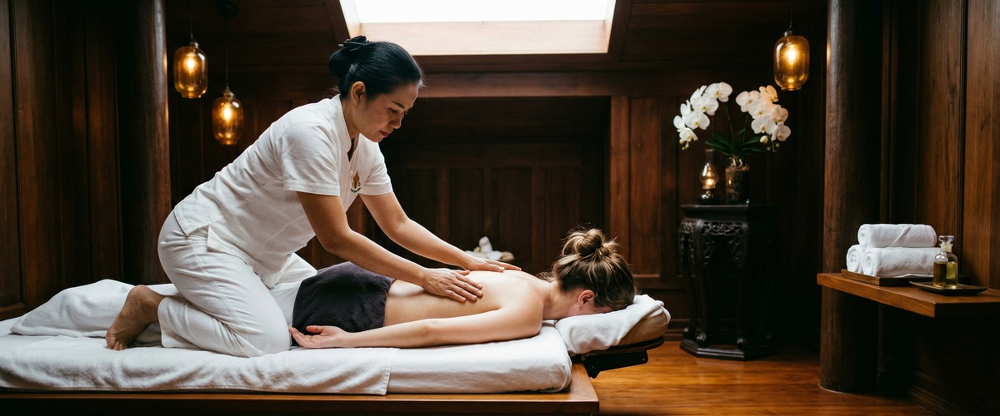
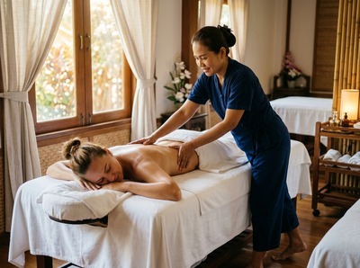

If you sit at a desk for most of the day, your body knows about it.

Tight hips, a stiff neck, shoulders that seem to creep up toward your ears by lunchtime. Research published in 2025 found that two in three workers experience pain linked to their workstation set-up, and office workers spend roughly two-thirds of their working day in a seated position.
The good news is that a focused morning stretching routine, done before you even open your inbox, can make a meaningful difference to how you feel from the first hour of the day to the last.
Stretching in the morning works because your body has been still for seven or eight hours. Joints need movement to circulate synovial fluid, the natural lubricant that keeps them feeling loose and responsive.

Getting ahead of the problem, rather than waiting until your neck is already locked up at 3pm, means your muscles arrive at your desk already warmed and lengthened.
There is also a practical advantage. A morning routine is far easier to stick to than one that relies on willpower mid-afternoon. Five to ten minutes before you shower or eat breakfast is a low-resistance habit to build, and the payoff carries through the whole working day.
Your hip flexors, the muscles that run along the front of your upper thighs and attach to your lower spine, shorten when you sit for long periods. Over time, tight hip flexors tilt the pelvis forward, loading the lumbar spine and contributing directly to lower back pain.
Yet most people stretching at home focus on their back and completely ignore this group.
To stretch them properly, kneel on one knee with your other foot flat on the floor in front of you. Keep your back straight, tuck your pelvis slightly, and lean forward until you feel a pull through the front of the back thigh. Hold for 30 seconds each side.
It is one of the most effective things a desk worker can do every single morning. You can book a session online if the tightness has already progressed beyond what a home stretch can undo.
Keyboard work encourages the shoulders to roll inward and the chest to compress. Over a long week, this pattern becomes a postural habit rather than just a posture.
A simple chest opener directly addresses this. Stand in a doorway, place one forearm against each side of the frame at shoulder height, and gently lean your bodyweight forward until you feel a stretch across the front of both shoulders and your chest. Hold for 20 to 30 seconds and breathe slowly.
If you do not have a doorway handy, clasping your hands behind your back and drawing your shoulder blades together works well. Either version begins to reverse the rounding that accumulates across a working week.
The traditional Thai massage treatment at Glasgow Thai Massage includes assisted chest and shoulder opening as part of the full-body stretch sequence, which is worth experiencing if you want to understand how much range you have been missing.
Neck tension is one of the most common complaints among office workers, and it rarely starts in the neck. It usually travels up from the upper trapezius, the thick band of muscle running from your neck to your outer shoulder.
Sitting with your head slightly forward of your spine, which most people do when reading a screen, keeps this muscle under constant low-grade strain.
Gently tilt your head to one side, bringing your ear toward your shoulder, and hold for 15 to 20 seconds. Do not pull the head down. Let the weight of it do the work.
Then slowly roll the chin toward the chest and to the other side. Follow this with a gentle shoulder shrug and release. Done slowly and without forcing the range, this sequence takes two minutes and noticeably reduces the baseline tension you carry into the workday.
If your neck and shoulders have reached the point of persistent stiffness, a Thai head massage focuses on the scalp, neck, and upper shoulder area. It can reach the deeper layers that daily stretching alone does not access.
A spinal twist decompresses the vertebrae, improves rotation in the thoracic spine (the part that stiffens most from desk work), and stimulates blood flow to the discs. Sit on the floor with both legs extended, then bend one knee and cross it over the other leg. Place the opposite elbow against the outside of the bent knee and gently rotate your torso.
Hold for 20 to 30 seconds each side.
If you are working with existing lower back discomfort, explore our lower back pain guide for more context on causes and treatment options. The spinal twist done gently every morning is preventive. It keeps the spine moving through a range it rarely gets when you are sitting still in a chair for hours at a time.
Cat-cow is a simple yoga-derived movement that takes your spine from full flexion to full extension in a controlled, rhythmic way. On all fours, breathe in as you drop your belly and lift your head (cow), then breathe out as you round your back toward the ceiling and tuck your chin (cat). Move slowly through ten repetitions.
It sounds modest, but this is one of the most efficient spinal warm-up movements available. It mobilises every segment of the spine, gently activates the deep stabilising muscles around the vertebrae, and improves the quality of movement you carry into the rest of the morning.
Glasgow Thai Massage clients who come in with chronic back tension regularly report that their at-home mobility work between sessions makes their treatments more effective and longer-lasting.
A morning stretching routine does not need to be ambitious to be useful. Ten minutes of deliberate, focused movement before the working day starts addresses the exact muscle groups that desk work systematically shortens and strains.
Start with the hip flexors and chest, add the neck release and spinal twist, finish with cat-cow, and you will notice the difference within a week. If the tension has already built into something more persistent, Glasgow Thai Massage is a short walk from the heart of the city centre, and our therapists can work with what your morning routine cannot yet reach.
Five to ten minutes is enough to make a real difference if you are consistent. A longer routine is not necessary every morning. Focus on the key areas affected by desk work: hip flexors, chest and shoulders, neck, and the lower back. Quality and regularity matter more than duration.
Either works, though many people find stretching easier before a heavy meal as the body is lighter and more comfortable in floor positions. If you stretch after eating, allow at least 30 minutes. The most important thing is to find a time in your morning routine that you can actually stick to.
Yes, regular morning stretching can significantly reduce neck and shoulder tension by counteracting the forward-head and rounded-shoulder posture that builds up during screen work. Neck tilts, shoulder rolls, and chest openers are particularly effective. For persistent or deep tension, a professional treatment such as Thai massage or deep tissue massage can address the muscle layers that daily stretching alone does not fully reach.
The hip flexors, chest, upper trapezius, and thoracic spine are the areas most affected by prolonged sitting. The hip flexors shorten from being held in a contracted position all day, the chest tightens from forward shoulder posture, and the thoracic spine stiffens from lack of rotation. Prioritising these areas will have the most noticeable impact on how you feel at work.
If you have been stretching consistently for two to four weeks and are still experiencing persistent pain, stiffness, or restricted movement, it is worth booking a professional treatment. A sports massage or traditional Thai massage can release muscle tension and restore range of motion that home stretching has not been able to shift. Glasgow Thai Massage offers both, with appointments available online at glasgowthaimassage.co.uk.